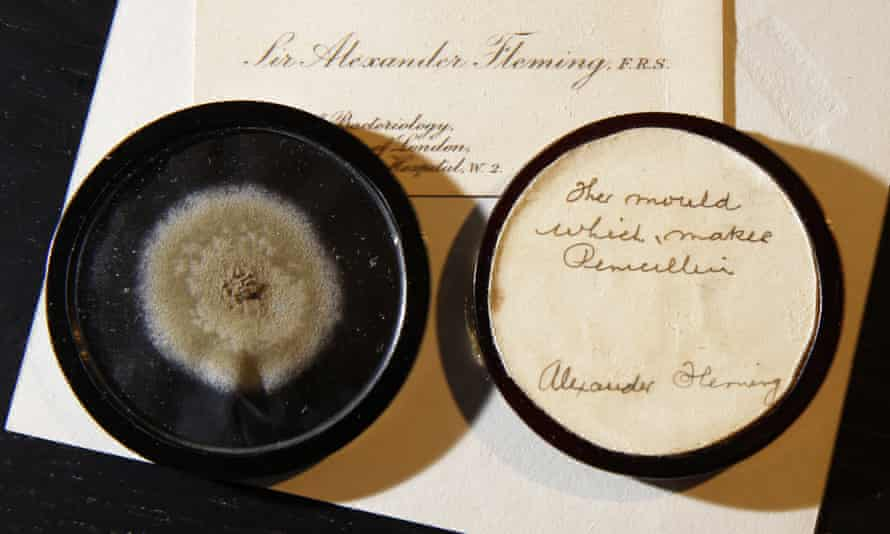

Pre nego što počnemo sa teorijom osvrnućemo se na jedan istorijski događaj.
Kada se britanski mikrobiolog Aleksandar Fleming vratio sa godišnjeg odmora i
ugledao buđ u jednoj od Petrijevih šoljica koje je ostavio,
ni on sam nije mogao da nasluti da je upravo to početak jedne
medicinske revolucije.
Proučavanjem sadržaja šoljice saznao je da je unutra bila čestica buđi koja je
u to vreme bila poznata pod nazivom Penicillium notatum, te je on svoju materiju
nazvao PENICILIN.
Međutim, od Flemingovog otkrića do korisne primene u medicini put je bio veoma
dug i težak.
U naučnoj zajednici nije postojao efikasan i pravilan način da se uradi procena
novog leka. S obzirom na to da se radilo o otkriću do kog je došlo slučajnim putem
neophodni su bili eksperimenti koji bi pokazali da je lek koristan,
a pre svega da nije štetan.
Neki pacijenti su se oporavljali spontano, a na neke lek uopšte nije ni delovao
i bilo je veoma teško razlikovati dobre od loših lekova (kojih je bilo i previše tada).
Još jedan veliki problem: velike kompanije nisu htele da preuzmu rizik masovne
proizvodnje penicilina. Pored nedovoljne ispitanosti leka, smatrali su da je
proizvodnja i neprofitabilna zbog sporog dobijanja.

Dok su biolozi ispitivali penicilin sa medicinske strane, matematičari tog vremena
su smišljali nove eksperimentalne tehnike, inspirisane postojećim koje su se upotrebljavale
u poljoprivredi, kako bi došli do novih zaključaka o leku.
Baš zbog nedostatka načina za ispitivanje novih lekova, tek pred kraj rata je
omogućena industrijalizacija i proizvodnja većih količina penicilina.
Ukoliko niste znali: većina vojnika koja je umirala tokom Drugog svetskog rata
nije direktno ubijena iz vatrenog oružja, već je umirala od bakterijskih infekcija
na ranama koje su zadobili u toku borbe.
I ova kasnija proizvodnja je spasila ogroman broj života, ali da je krenula
ranije verovatno bi smrtnost inficiranih vojnika bila manja.
Danas se od statističara očekuje da na osnovu kontrolisanog slučajnog uzorka u
eksperimentu za kratko vreme predstave kliničku vrednost leka i samim tim skrate
vreme od otkrivanja do široke upotrebe istog.
Eh, da je Fleming imao tim današnjih statističara…